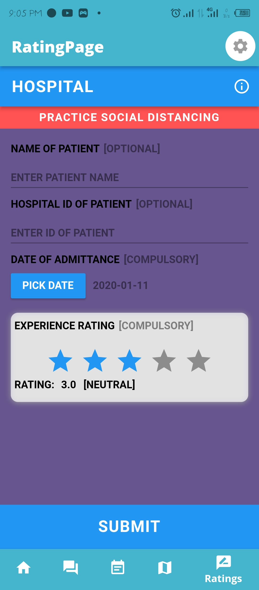

MediSave hepls users to find the closest health centres for their ailment.
Medisave has a window having a virtual geographic map.

This enables the user to easily locate the nearby health center.
Medisave also has a rating option that enables the user to rate their experience at the center.
